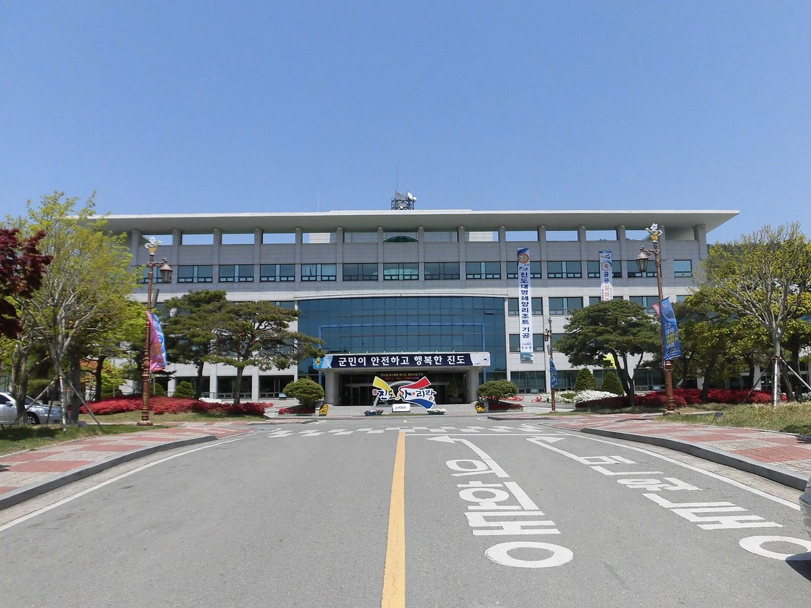

진도군, 영농법인 임대 2028년까지 남은 군유 간척지에 태양광 임대 가능 회신…41MW·410억 원 민간 사업 선점 논란

지산면 보전 간척지 35필지에 민간 발전사업자 허가 신청, 기존 5개 영농조합법인은 동의한 적 없다고 밝혀…군은 절차 재검토 중인 것으로 알려졌지만 직접 해명은 아직 없어
전남 진도군이 기존 영농조합법인의 임대차 계약이 2028년 말까지 남아 있는 군유 간척지에 대해 태양광 발전시설 용도로 '임대가 가능하다'는 의견을 두 차례 내면서, 41MW 규모 민간 태양광 사업이 부지를 먼저 선점하는 근거가 됐다는 문제가 제기됐다. 대상은 진도군 지산면 보전 간척지 35필지 9만9,618평(약 32만9,000㎡)으로, 지금은 5개 영농조합법인이 군과 2028년 12월 31일까지 계약을 맺고 벼농사를 짓고 있으며, 한 민간 발전사업자가 총사업비 410억 원을 들여 발전소를 짓는 사업을 추진하고 있다. 경과를 보면 2025년 12월 말 사업자 문의에 군 건설과가 농어촌정비법 시행령·농지법 등을 들어 사업계획 수립과 군 협의, 정해진 임대차 절차를 조건으로 임대 가능하다고 회신했고, 사업자는 2026년 2월부터 갈두·상보전·하보전·거제 4개 지역 주민협동조합과 업무협약을 맺은 뒤 8월 13일 기후에너지환경부에 발전사업 허가를 신청했다. 기후부가 8월 19일 의견을 요청하자 군 경제에너지과는 10월 22일 군수·부군수 결재를 거쳐 임대차가 가능하다는 취지의 의견서를 냈는데, 이 회신들은 임대 승인이나 토지 사용권 부여가 아니어서 전기사업법이 허가 기준으로 삼는 사업 실현 가능성 판단과는 구분해야 한다는 지적이 나온다. 기존 임차인 쪽 한 영농조합법인 대표는 "주민 개인적인 동의는 있지만 5개 영농조합법인은 동의한 적이 없다"고 말했다. 진도군은 관련 법률과 행정 절차가 적정했는지 다시 검토하고 있는 것으로 알려졌으나 군과 사업자의 직접 해명은 나오지 않았고, 지금까지 드러난 사실만으로 특혜나 위법한 임대가 있었다고 단정할 수는 없다.
시민에너지 관점
군유 간척지는 군민 모두의 재산이어서, 그 위에 들어설 발전소를 누가 짓고 수익을 누가 가져갈지는 먼저 문의한 사업자가 아니라 공개된 절차가 정해야 한다. 네덜란드가 2019년 기후협약에서 육상 풍력·태양광의 50%를 지역 주민·공동체가 소유하도록 목표를 세운 것처럼, 공공 부지 재생에너지는 처음부터 지역 소유를 기준으로 설계할 수 있다. 공모 절차가 사업을 늦춘다는 걱정이 있겠지만, 기존 경작자의 권리와 부지 사용 조건을 먼저 정리하지 않은 채 허가부터 밟으면 뒤에 분쟁과 소송으로 더 오래 멈출 수 있다. 진도군은 회신과 의견서의 근거를 공개하고, 간척지 태양광을 추진한다면 기존 경작 법인과 주민이 실제 지분을 갖는 공개 공모 방식으로 사업자를 정해야 한다.
출처: 폴리뉴스 2026-11-02 오승근 원문 보기
珍島郡、営農法人の賃貸が2028年まで残る郡有干拓地に太陽光の賃貸可能と回答…41MW・410億ウォンの民間事業の先取り論争
智山面の保全干拓地35筆地で民間発電事業者が許可申請、既存の5営農組合法人は同意していないと表明…郡は手続きを再検討中とされるが直接の説明はまだない
全羅南道珍島郡が、既存の営農組合法人との賃貸借契約が2028年末まで残る郡有干拓地について、太陽光発電施設の用途で「賃貸が可能だ」とする意見を2度出し、41MW規模の民間太陽光事業が用地を先取りする根拠になったとの問題が提起されている。対象は珍島郡智山面の保全干拓地35筆地、9万9,618坪（約32万9,000㎡）で、現在は5つの営農組合法人が郡と2028年12月31日までの契約を結んで稲作をしており、ある民間発電事業者が総事業費410億ウォンを投じて発電所を建てる事業を進めている。経緯をみると、2025年12月末の事業者の問い合わせに対し、郡の建設課が農漁村整備法施行令や農地法などを根拠に、事業計画の策定、郡との協議、所定の賃貸借手続きを条件として賃貸可能と回答し、事業者は2026年2月から葛頭・上保全・下保全・巨堤の4地域の住民協同組合と業務協約を結んだうえで、8月13日に気候エネルギー環境部へ発電事業許可を申請した。気候部が8月19日に意見を求めると、郡の経済エネルギー課は10月22日、郡守・副郡守の決裁を経て賃貸借が可能との趣旨の意見書を提出したが、これらの回答は賃貸の承認や土地使用権の付与ではなく、電気事業法が許可基準とする事業の実現可能性の判断とは区別すべきだとの指摘が出ている。既存の賃借人側のある営農組合法人の代表は「住民個人の同意はあるが、5つの営農組合法人は同意したことがない」と話した。珍島郡は関連法令と行政手続きが適正だったかを再検討しているとされるが、郡と事業者による直接の説明は出ておらず、現時点で明らかになった事実だけで特恵や違法な賃貸があったと断定することはできない。
市民エネルギーの視点
郡有干拓地は郡民全体の財産であり、その上に建つ発電所を誰が建て、誰が収益を得るかは、先に問い合わせた事業者ではなく公開された手続きが決めるべきだ。オランダが2019年の気候協定で陸上風力・太陽光の50%を地域住民や共同体が所有する目標を掲げたように、公共用地の再生可能エネルギーは最初から地域所有を基準に設計できる。公募手続きが事業を遅らせるとの懸念もあるだろうが、既存の耕作者の権利や用地の使用条件を先に整理しないまま許可を進めれば、後に紛争や訴訟でより長く止まりかねない。珍島郡は回答と意見書の根拠を公開し、干拓地の太陽光を進めるのであれば、既存の耕作法人と住民が実際に持分を持つ公開公募方式で事業者を決めるべきだ。
出典: ポリニュース 2026-11-02 オ・スングン 原文を読む
珍岛郡就营农法人租约延续至2028年的郡有围垦地回复可租用于太阳能…41MW、410亿韩元民间项目抢占用地引发争议
民间发电企业就智山面保全围垦地35块地申请许可，现有5家营农组合法人表示从未同意…据悉郡方正在重新审查程序，但尚未直接说明
全罗南道珍岛郡对一块与现有营农组合法人租赁合同要到2028年底才到期的郡有围垦地，两次就太阳能发电设施用途出具"可以出租"的意见，有人质疑这成了一个41MW民间太阳能项目抢先占据用地的依据。涉及土地为珍岛郡智山面保全围垦地35块，共9万9,618坪（约32万9,000平方米），目前由5家营农组合法人与郡签约至2028年12月31日种植水稻，一家民间发电企业正推进总投资410亿韩元的电站建设项目。从经过看，2025年12月底企业提出咨询后，郡建设科依据农渔村整备法施行令和农地法等回复称，在制定事业计划、与郡协商并履行规定租赁程序的前提下可以出租；企业自2026年2月起与葛头、上保全、下保全、巨堤4个地区的居民合作社签订业务协议，并于8月13日向气候能源环境部申请发电事业许可。气候部8月19日征求意见后，郡经济能源科于10月22日经郡守、副郡守审批，提交了可以租赁的意见书；但有观点指出，这些回复并非租赁批准或土地使用权授予，应与电气事业法作为许可标准的项目可行性判断区分开来。现有承租方一家营农组合法人的代表表示："居民个人虽有同意，但5家营农组合法人从未同意过。"据悉珍岛郡正在重新审查相关法律和行政程序是否妥当，但郡方和企业均未直接说明，仅凭目前披露的事实，还不能断定存在特惠或违法出租。
市民能源视角
郡有围垦地是全体郡民的财产，在上面建设电站由谁来建、收益归谁，应由公开程序决定，而不是看哪家企业先来咨询。正如荷兰在2019年气候协议中提出陆上风电和太阳能的50%由当地居民和社区拥有的目标，公共用地上的可再生能源完全可以从一开始就以本地所有为标准来设计。有人担心公开招募程序会拖慢项目，但如果不先理清现有耕作者的权利和用地条件就推进许可，日后可能因纠纷和诉讼停滞得更久。珍岛郡应公开回复和意见书的依据；如果推进围垦地太阳能，就应以现有耕作法人和居民实际持股的公开招募方式选定项目主体。
来源: Polinews 2026-11-02 吴承根 查看原文
Jindo County says reclaimed land still leased to farm corporations until 2028 can be rented for solar, raising questions over a 41MW, 41 billion won private project getting in first
A private developer has applied for a generation licence covering 35 plots of reclaimed land in Jisan-myeon, while the five farming corporations now leasing it say they never consented; the county is reportedly reviewing the procedure but has not explained itself directly
Jindo County in South Jeolla has twice said that county-owned reclaimed land, still leased to farming corporations until the end of 2028, "can be rented" for solar power, prompting questions over whether its statements gave a 41MW private solar project a head start on the site. The land covers 35 plots of conservation reclaimed land in Jisan-myeon totalling 99,618 pyeong (about 329,000 square metres), where five farming corporations grow rice under contracts with the county that run to Dec. 31, 2028, and a private developer is pursuing a power plant with a total project cost of 41 billion won. In late December 2025, after an inquiry from the developer, the county's construction department replied, citing the enforcement decree of the Rural Community Improvement Act and the Farmland Act, that a lease was possible provided a concrete business plan was drawn up, the county was consulted and the required lease procedures were followed; from February 2026 the developer signed business agreements with residents' cooperatives in four areas, Galdu, Sangbojeon, Habojeon and Geoje, and on Aug. 13 applied to the Ministry of Climate, Energy and Environment for a generation licence. When the ministry asked for the county's views on Aug. 19, its economy and energy department submitted an opinion on Oct. 22, approved by the county head and deputy, saying a lease for solar facilities was possible, yet critics note that these replies neither approved a lease nor granted land-use rights and should be kept separate from the feasibility test the Electricity Business Act sets for licences. The head of one of the farming corporations now leasing the land said, "Individual residents have agreed, but the five farming corporations have never consented." Jindo County is reported to be reviewing whether the relevant laws and administrative steps were properly applied, but neither the county nor the developer has commented directly, and the facts so far do not establish any favouritism or unlawful lease.
Citizen Energy View
County-owned reclaimed land belongs to all residents, so who builds a power plant on it and who keeps the revenue should be settled by an open process, not by which developer asked first. Just as the Netherlands set a goal in its 2019 Climate Agreement for 50% of onshore wind and solar to be owned by local residents and communities, renewable energy on public land can be designed around local ownership from the outset. Some will worry that public tendering slows projects down, but pushing a licence ahead without first settling existing farmers' rights and land-use terms risks far longer delays later through disputes and lawsuits. Jindo County should publish the basis for its replies and opinion, and if it pursues solar on the reclaimed land, it should choose a developer through an open tender in which the farming corporations and residents hold real equity.
Source: Polinews 2026-11-02 Oh Seung-geun Read the original